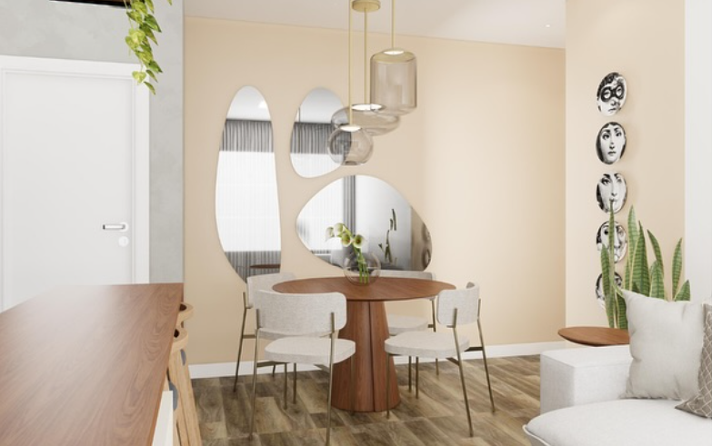
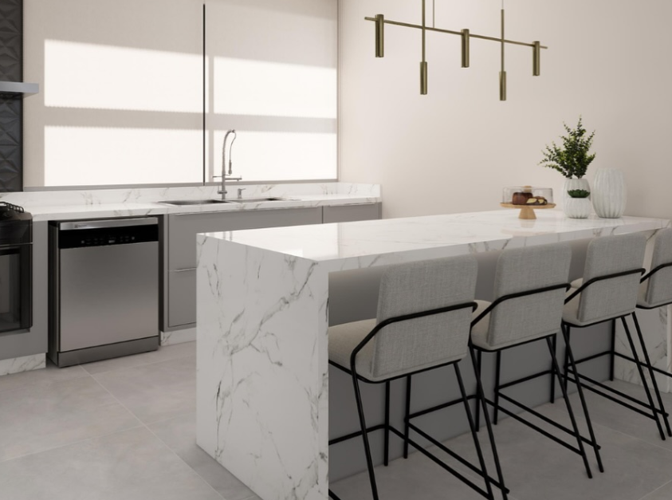
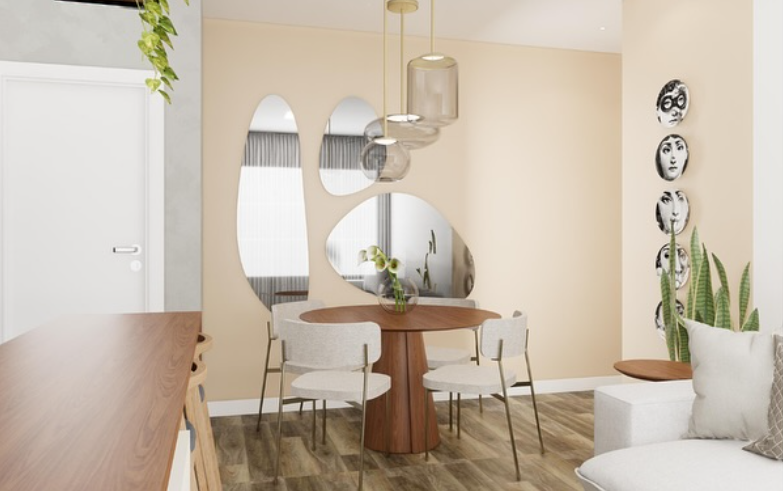
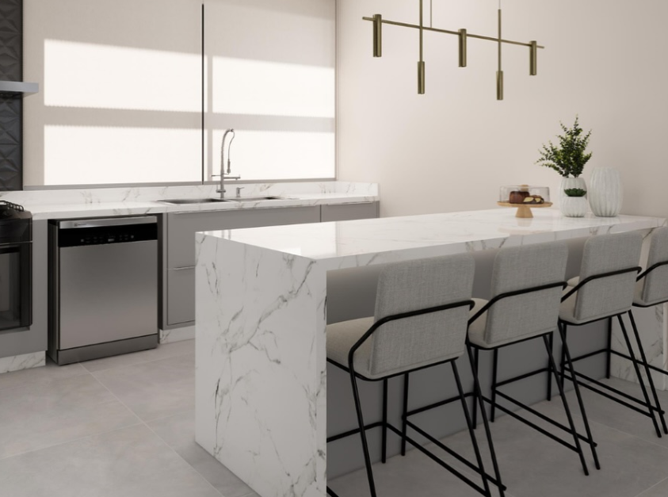

Bem-vindo!
É um prazer ter você aqui. Na nossa construtora, cada projeto começa com confiança e termina com orgulho. Vamos construir algo incrível juntos.
Quem somos
A empressa conta com profissionais de vasta experiência na área da arquitetura de interiores, tanto residencial quanto comercial e realizam por volta de 17 projetos por ano, principalmente em Santa Catarina, Paraná e São Paulo, e contam com mais de 360 obras entregues. A frase “Qualidade, compromisso e rigoroso prazo de entrega” é utilizada como seu slogan.
A empresa presta o serviço completo, desde a concepção do projeto de arquitetura até a entrega da obra concluída, devido a sua equipe estruturada pelos setores comercial, financeiro, operacional e de orçamentos diversos. Os serviços incluem a visita técnica ao local, planejamento, criação do projeto com orçamento completo, incluindo opções de fornecedores, e prazo até o término da obra, trabalham com contrato, a gestão do projeto, execução do projeto com equipe especializada e o acompanhamento da obra no local.
A representante, Adriana Paiffer, garante que nunca quebrou um contrato pelo prazo, e sempre entregam um projeto com o melhor custo para o cliente, pois há uma equipe dedicada a encontrar os produtos certos para a obra com o melhor custo. Além disso, os projetos eficientes e suas parcerias com a marcenaria e marmoraria agilizam a entrega de produtos completos, sem a necessidade de dividir em etapas. Ela também conta que está sempre disponível para atendimentos e consultas, tanto durante a fase da obra, quando pós-obra, tirando dúvidas dos clientes que possam precisar de algum reparo ou reforma por exemplo.
Público-alvo
O público-alvo da KEY TO GO é formado por pessoas ou empresas que buscam uma solução completa para o interior de sua residência ou estabelecimento comercial, com garantia de entrega dentro do prazo e orçamento estabelecido no contrato.
A lista de clientes da empresa de arquitetura KEY TO GO inclui, construtoras, clínicas, edifícios e pessoas físicas.
Conheça alguns de nossos projetos
 


